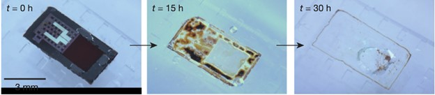

The Innovation
Created by Rory K. J. Murphy et al., the biochip allows doctors to only have to surgically insert a device smaller than the tip of a pencil into the brain. Once inserted, it is hooked up to a wireless transmitter that sends information gathered (such as fluid pressure, temperature, and pH levels) to computers.

Neurosurgeons Wilson Z. “Zack” Ray (left) and Rory K. J. Murphy (right) who worked on creating the dissolvable biochip.
The Dissolving Process
After thirty hours, usually well after the necessary medicine and procedures are administered, the device dissolves by itself, though the exact time depends on the surrounding brain solution.
How it is made
Engineers at the University of Illinois created this using something known as polylactic-co-glycolic acid (PLGA), which is an FDA-approved biodegradable and biocompatible acid. For more information on PLGA and its uses, please reference the section below.
The Chip
An example of the biochip dissolving in a mock fluid that is similar to the average composition of brain fluid. Though bits of the SiO2 membrane remain, most of it has completely dissolved.
